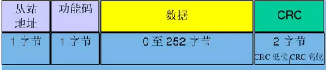

- Wiki table of contents
header-v2
SEER Robotics
Last updated: Sep 24
- 概述
- 关于 Modbus
- 如何使用 Modbus RTU？
- 概述
- Modbus 串行总线
- Modbus RTU
- 主从通讯的的详细解释
- Modbus RTU 的报文格式如下
- Modbus ASCII
- Modbus TCP
- 简述
- Modbus TCP 的报文格式
- Modbus RTU 到 Modbus TCP 的转换
- 转换的拓扑结构和注意事项
- 客户错误案例说明
- 对象类型（Object types）
- 整数
- 浮点数
- 地址偏移
- 模拟测试软件
- 软件介绍
- 资料介绍
- 与机器人建立连接
- 使用 Modbus Poll 建立连接
- 使用 Modbus 控制机器人
- 确认定位正确
- 路径导航
- 暂停导航
- 发送开环速度
- 设置 DO
- 编写代码进行 Modbus 通讯
- 使用 PLC 进行 Modbus 通讯
- 其他
概述
概述
Modified September 24
关于 Modbus
机器人的 Modbus TCP 服务通过内网 IP (192.168.192.5) 和外网 IP 均可使用。网络端口采用标准 Modbus 端口 502 。运行时，外部设备作为主设备（master），机器人为从属设备（slave）进行通讯。外部设备负责从机器人上拉取数据。
理论上通过 Modbus 同时与机器人通讯的外部设备数量不受限制。每个外部设备都由单独的进程负责。只要连接成功，都可以从机器人中读取/写入数据。机器人参数配置中 modbusSlaveId 设为 -1 表示不检查 modbus 报文的 slaveid。
为了防止因高速读写数据引起的异常，机器人在通讯时采用数据缓存。可能在极短的时间内，Modbus 获取的信息与实际机器人状态不符。请避免过高速的读写数据。
如何使用 Modbus RTU？
概述
Modbus 工业现场总线可以按照在数据链路层的不同实现方式主要分为两种：Modbus 串行（RTU、ASSII）和 TCP。
Modbus 串行总线
Modbus 串行总线的的实现主要是通过串行通讯的方式实现，对通讯的方式没有特殊的要求和限制，主流的串行物理总线都可以，例如 RS232，RS422，RS485 等。串行总线的通讯方式是主从通讯方式(从机不被访问的情况下不会向主机法总任何报文，且从机之间不能进行通讯)；主机对从机的通讯模式有两种（广播和单播，下面我们会在报文格式中进行详细解释）
Modbus RTU
主从通讯的的详细解释
注意 Modbus 从站在网路上有一个唯一的从属节点地址，主站的寻址范围有（0—255），0代表广播地址，具体的地址分配如下：

Modbus RTU 的报文格式如下
